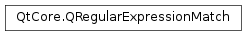

QRegularExpressionMatch¶
Synopsis¶
Functions¶
- def
captured([nth=0]) - def
captured(name) - def
capturedEnd([nth=0]) - def
capturedEnd(name) - def
capturedLength([nth=0]) - def
capturedLength(name) - def
capturedRef([nth=0]) - def
capturedRef(name) - def
capturedStart([nth=0]) - def
capturedStart(name) - def
capturedTexts() - def
hasMatch() - def
hasPartialMatch() - def
isValid() - def
lastCapturedIndex() - def
matchOptions() - def
matchType() - def
regularExpression() - def
swap(other)
Detailed Description¶
The
PySide2.QtCore.QRegularExpressionMatchclass provides the results of a matching aPySide2.QtCore.QRegularExpressionagainst a string.A
PySide2.QtCore.QRegularExpressionMatchobject can be obtained by calling theQRegularExpression.match()function, or as a single result of a global match from aPySide2.QtCore.QRegularExpressionMatchIterator.The success or the failure of a match attempt can be inspected by calling the
PySide2.QtCore.QRegularExpressionMatch.hasMatch()function.PySide2.QtCore.QRegularExpressionMatchalso reports a successful partial match through thePySide2.QtCore.QRegularExpressionMatch.hasPartialMatch()function.In addition,
PySide2.QtCore.QRegularExpressionMatchreturns the substrings captured by the capturing groups in the pattern string. The implicit capturing group with index 0 captures the result of the whole match. ThePySide2.QtCore.QRegularExpressionMatch.captured()function returns each substring captured, either by the capturing group’s index or by its name:QRegularExpression re("(\\d\\d) (?<name>\\w+)"); QRegularExpressionMatch match = re.match("23 Jordan"); if (match.hasMatch()) { QString number = match.captured(1); // first == "23" QString name = match.captured("name"); // name == "Jordan" }For each captured substring it is possible to query its starting and ending offsets in the subject string by calling the
PySide2.QtCore.QRegularExpressionMatch.capturedStart()and thePySide2.QtCore.QRegularExpressionMatch.capturedEnd()function, respectively. The length of each captured substring is available using thePySide2.QtCore.QRegularExpressionMatch.capturedLength()function.The convenience function
PySide2.QtCore.QRegularExpressionMatch.capturedTexts()will return all the captured substrings at once (including the substring matched by the entire pattern) in the order they have been captured by captring groups; that is,captured(i) == capturedTexts().at(i).You can retrieve the
PySide2.QtCore.QRegularExpressionobject the subject string was matched against by calling thePySide2.QtCore.QRegularExpressionMatch.regularExpression()function; the match type and the match options are available as well by calling thePySide2.QtCore.QRegularExpressionMatch.matchType()and thePySide2.QtCore.QRegularExpressionMatch.matchOptions()respectively.Please refer to the
PySide2.QtCore.QRegularExpressiondocumentation for more information about the Qt regular expression classes.See also
-
class
PySide2.QtCore.QRegularExpressionMatch¶ -
class
PySide2.QtCore.QRegularExpressionMatch(match) Parameters: match – PySide2.QtCore.QRegularExpressionMatchConstructs a valid, empty
PySide2.QtCore.QRegularExpressionMatchobject. The regular expression is set to a default-constructed one; the match type toQRegularExpression.NoMatchand the match options toQRegularExpression.NoMatchOption.The object will report no match through the
PySide2.QtCore.QRegularExpressionMatch.hasMatch()and thePySide2.QtCore.QRegularExpressionMatch.hasPartialMatch()member functions.Constructs a match result by copying the result of the given
match.See also
PySide2.QtCore.QRegularExpressionMatch.operator=()
-
PySide2.QtCore.QRegularExpressionMatch.captured(name)¶ Parameters: name – unicode Return type: unicode Returns the substring captured by the capturing group named
name.If the named capturing group
namedid not capture a string, or if there is no capturing group namedname, returns a nullPySide2.QtCore.QString.
-
PySide2.QtCore.QRegularExpressionMatch.captured([nth=0]) Parameters: nth – PySide2.QtCore.intReturn type: unicode Returns the substring captured by the
nthcapturing group.If the
nthcapturing group did not capture a string, or if there is no such capturing group, returns a nullPySide2.QtCore.QString.See also
PySide2.QtCore.QRegularExpressionMatch.capturedRef()capturedView()PySide2.QtCore.QRegularExpressionMatch.lastCapturedIndex()PySide2.QtCore.QRegularExpressionMatch.capturedStart()PySide2.QtCore.QRegularExpressionMatch.capturedEnd()PySide2.QtCore.QRegularExpressionMatch.capturedLength()QString.isNull()
-
PySide2.QtCore.QRegularExpressionMatch.capturedEnd([nth=0])¶ Parameters: nth – PySide2.QtCore.intReturn type: PySide2.QtCore.intReturns the offset inside the subject string immediately after the ending position of the substring captured by the
nthcapturing group. If thenthcapturing group did not capture a string or doesn’t exist, returns -1.
-
PySide2.QtCore.QRegularExpressionMatch.capturedEnd(name) Parameters: name – unicode Return type: PySide2.QtCore.intReturns the offset inside the subject string immediately after the ending position of the substring captured by the capturing group named
name. If the capturing group namednamedid not capture a string or doesn’t exist, returns -1.
-
PySide2.QtCore.QRegularExpressionMatch.capturedLength([nth=0])¶ Parameters: nth – PySide2.QtCore.intReturn type: PySide2.QtCore.intReturns the length of the substring captured by the
nthcapturing group.Note
This function returns 0 if the
nthcapturing group did not capture a string or doesn’t exist.
-
PySide2.QtCore.QRegularExpressionMatch.capturedLength(name) Parameters: name – unicode Return type: PySide2.QtCore.intReturns the length of the substring captured by the capturing group named
name.Note
This function returns 0 if the capturing group named
namedid not capture a string or doesn’t exist.
-
PySide2.QtCore.QRegularExpressionMatch.capturedRef(name)¶ Parameters: name – unicode Return type: PySide2.QtCore.QStringRefReturns a reference to the string captured by the capturing group named
name.If the named capturing group
namedid not capture a string, or if there is no capturing group namedname, returns a nullPySide2.QtCore.QStringRef.
-
PySide2.QtCore.QRegularExpressionMatch.capturedRef([nth=0]) Parameters: nth – PySide2.QtCore.intReturn type: PySide2.QtCore.QStringRefReturns a reference to the substring captured by the
nthcapturing group.If the
nthcapturing group did not capture a string, or if there is no such capturing group, returns a nullPySide2.QtCore.QStringRef.See also
PySide2.QtCore.QRegularExpressionMatch.captured()capturedView()PySide2.QtCore.QRegularExpressionMatch.lastCapturedIndex()PySide2.QtCore.QRegularExpressionMatch.capturedStart()PySide2.QtCore.QRegularExpressionMatch.capturedEnd()PySide2.QtCore.QRegularExpressionMatch.capturedLength()QStringRef.isNull()
-
PySide2.QtCore.QRegularExpressionMatch.capturedStart([nth=0])¶ Parameters: nth – PySide2.QtCore.intReturn type: PySide2.QtCore.intReturns the offset inside the subject string corresponding to the starting position of the substring captured by the
nthcapturing group. If thenthcapturing group did not capture a string or doesn’t exist, returns -1.
-
PySide2.QtCore.QRegularExpressionMatch.capturedStart(name) Parameters: name – unicode Return type: PySide2.QtCore.intReturns the offset inside the subject string corresponding to the starting position of the substring captured by the capturing group named
name. If the capturing group namednamedid not capture a string or doesn’t exist, returns -1.
-
PySide2.QtCore.QRegularExpressionMatch.capturedTexts()¶ Return type: list of strings Returns a list of all strings captured by capturing groups, in the order the groups themselves appear in the pattern string.
-
PySide2.QtCore.QRegularExpressionMatch.hasMatch()¶ Return type: PySide2.QtCore.boolReturns
trueif the regular expression matched against the subject string, or false otherwise.
-
PySide2.QtCore.QRegularExpressionMatch.hasPartialMatch()¶ Return type: PySide2.QtCore.boolReturns
trueif the regular expression partially matched against the subject string, or false otherwise.Note
Only a match that explicitly used the one of the partial match types can yield a partial match. Still, if such a match succeeds totally, this function will return false, while
PySide2.QtCore.QRegularExpressionMatch.hasMatch()will return true.See also
QRegularExpression.match()QRegularExpression.MatchTypePySide2.QtCore.QRegularExpressionMatch.hasMatch()
-
PySide2.QtCore.QRegularExpressionMatch.isValid()¶ Return type: PySide2.QtCore.boolReturns
trueif the match object was obtained as a result from theQRegularExpression.match()function invoked on a validPySide2.QtCore.QRegularExpressionobject; returnsfalseif thePySide2.QtCore.QRegularExpressionwas invalid.
-
PySide2.QtCore.QRegularExpressionMatch.lastCapturedIndex()¶ Return type: PySide2.QtCore.intReturns the index of the last capturing group that captured something, including the implicit capturing group 0. This can be used to extract all the substrings that were captured:
QRegularExpressionMatch match = re.match(string); for (int i = 0; i <= match.lastCapturedIndex(); ++i) { QString captured = match.captured(i); // ... }
Note that some of the capturing groups with an index less than could have not matched, and therefore captured nothing.
If the regular expression did not match, this function returns -1.
-
PySide2.QtCore.QRegularExpressionMatch.matchOptions()¶ Return type: PySide2.QtCore.QRegularExpression.MatchOptionsReturns the match options that were used to get this
PySide2.QtCore.QRegularExpressionMatchobject, that is, the match options that were passed toQRegularExpression.match()orQRegularExpression.globalMatch().
-
PySide2.QtCore.QRegularExpressionMatch.matchType()¶ Return type: PySide2.QtCore.QRegularExpression.MatchTypeReturns the match type that was used to get this
PySide2.QtCore.QRegularExpressionMatchobject, that is, the match type that was passed toQRegularExpression.match()orQRegularExpression.globalMatch().
-
PySide2.QtCore.QRegularExpressionMatch.regularExpression()¶ Return type: PySide2.QtCore.QRegularExpressionReturns the
PySide2.QtCore.QRegularExpressionobject whose match() function returned this object.
-
PySide2.QtCore.QRegularExpressionMatch.swap(other)¶ Parameters: other – PySide2.QtCore.QRegularExpressionMatchSwaps the match result
otherwith this match result. This operation is very fast and never fails.
© 2018 The Qt Company Ltd. Documentation contributions included herein are the copyrights of their respective owners. The documentation provided herein is licensed under the terms of the GNU Free Documentation License version 1.3 as published by the Free Software Foundation. Qt and respective logos are trademarks of The Qt Company Ltd. in Finland and/or other countries worldwide. All other trademarks are property of their respective owners.